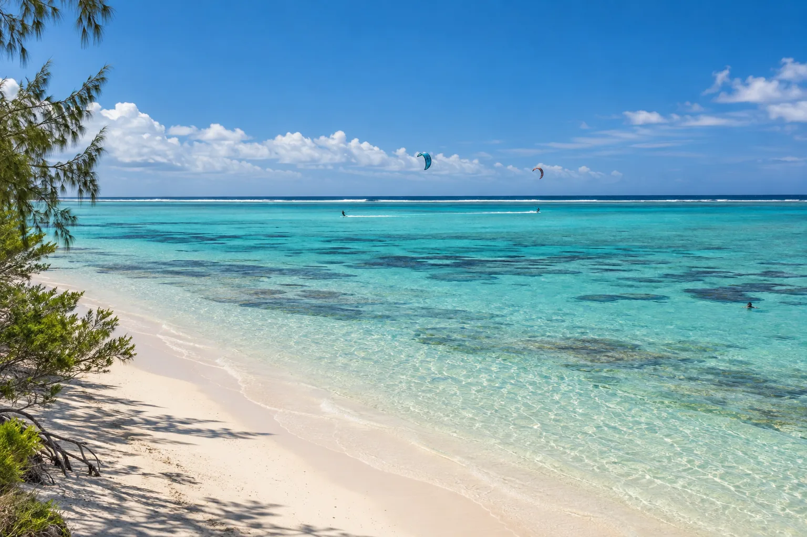

Plage de Poé
Nouvelle-Calédonie · kitesurf, snorkeling, baignade

Lagon classé au patrimoine mondial, protégé par la barrière de corail. Eau plate pour le kite et tortues au snorkeling.
- Lieu
- Nouvelle-Calédonie
- Niveau
- Débutant
- Activités
- kitesurf, snorkeling, baignade
- Type d'eau
- Mer / océan
- Coordonnées
- -21.61, 165.39 (position approximative du secteur)
Dangers à connaître
- Vent l’après-midi.
- Récif protégé.
Le conseil d'Ocean Buddy
Le vent se lève l’après-midi, parfait pour le kite.
Ouvrir dans Ocean Buddy Télécharger sur l'App Store
Source : Fiche Ocean Buddy · septembre 2026 · à vérifier localement.